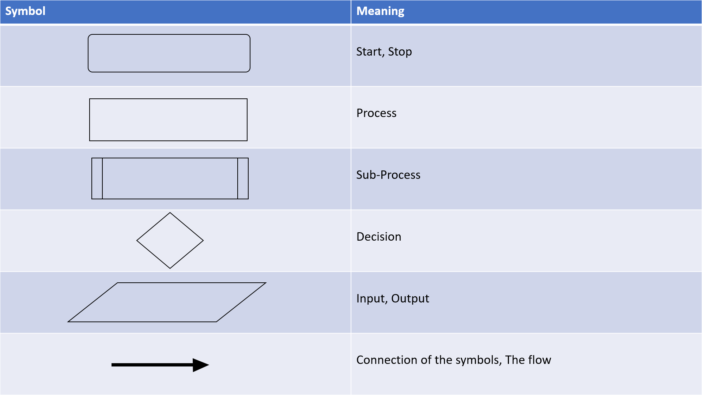

Algorithms
An algorithm is a set of instructions to solve a problem.Characteristics
Finiteness - Algorithm should have a limit to stepsUnambiguous - Must be clean and precise
Inputs and Outputs - Clearly identified, must have 0 or more inputs and 1 output
Logical Sequencing - Follow a logical seuqence to complete its steps
Iteration - Steps should be repeated until the desired outcome is outputted
Selection - Any input should lead to a specified step
Independent - Algorithm should be able to run by itself
Feasibility - Implemented with specified and defined resources
Structured English - Should be legible to all users with or without any programming Knowledge
Computational Thinking
Decomposition
The breaking down of tasks or steps into smaller ones for capability.Process:
1. Identify the problems and processes
2. Break down the problems into seperate tasks
3. Describe the tasks and sub-tasks
4. Communicate
Pattern Recognition
The analysis of decomposed tasks or steps to find patterns in the steps or tasks.Process:
1. Identify the common elements in prolems or systems
2. Identify the common differences in problems or systems
3. Identify individual elements in patterns
4. Describe the patterns that have been identifed
5. Make predictions
Abstraction
Removing or filtering unwanted or not needed tasks or steps to focus on the key ones.Process:
1. Identify the information needed for the problem
2. Carry abstraction filter out on the useless information
Variables - Values that can change when assigned with new data
#Python
#Assigned the variable "x" to 1
x=1
#The variable "x" is going to be reassigned to the integer 2
x=2
print(x)
#The number 2 will be outputted
Constant - Values that NEVER change#Assigned the variable "x" to 1
x=1
#The variable "x" is going to be reassigned to the integer 2
x=2
print(x)
#The number 2 will be outputted
#Python
#Import the module "math"
import math
#Assign constant "x" to pi value from math module
x=math.pi
print(x)
#Pi will never change as it is a number that never changes
Pseudocode - An informal way of writing code for all high-level programming languages (such as Python, C++) to understand and write in their specialist language#Import the module "math"
import math
#Assign constant "x" to pi value from math module
x=math.pi
print(x)
#Pi will never change as it is a number that never changes
#Pseudocode
INPUT num
newnum = num * 2
OUPUT newnum
Flowchart - A visual understanding of an algorithm. Consists of symbols connected by linesINPUT num
newnum = num * 2
OUPUT newnum
